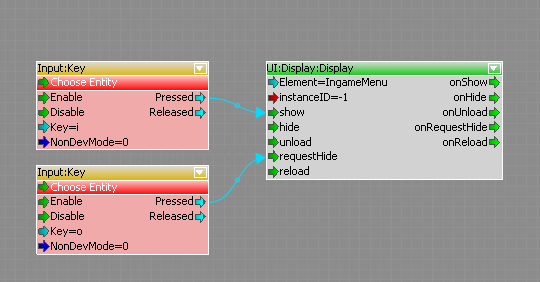

Обзор
- Скопируйте и вставьте этот код куда-нибудь в корневой этап вашего Flash-ресурса.
// create onEnterFrame function to fade-in the root element (if UI Element is shown up)
// We are using the cry_onShow function, which is called by the engine when the element is made visible.
function cry_onShow()
{
_root._alpha = 0; // We set the _root._alpha to 0, because we want to animate it and fade it in over time.
onEnterFrame = function()
{
// Have we reached 100 % alpha ?
if (_root._alpha < 100)
{
_root._alpha++;
}
else
{
// clear onEnterFrame function
onEnterFrame = function() {};
}
}
}
// create onEnterFrame function to fade-out the root element (if requested by UI System)
// The same for the inverse action. We use the cry_requestHide function called by the engine, when the element is hidden.
function cry_requestHide()
{
onEnterFrame = function()
{
// If the alpha is greater than 0
if (_root._alpha > 0)
{
_root._alpha--;
}
else
{
// clear onEnterFrame function and notify UI-System that this element does not need to be drawn anymore.
onEnterFrame = function() {};
// We call the cry_hideElement fscommand, to tell the engine that this ui element is not visible anymore.
// This is an optimization in a form, because the engine doesn't have to draw a transparent UI element enymore :)
fscommand("cry_hideElement");
}
}
}2. Теперь вы можете постепенно увеличивать/уменьшать элемент, активируя порт. показать / requestHide если UI:Дисплей:Дисплей Узел.
- Запуск вызовов show port cry_onShow функция сценария действия.
- Запуск вызовов порта requestHide cry_requestHide функция сценария действия.
